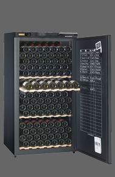

SFCV
N°1 des caves à vins
N°1 des caves à vins
Caves de veillissement
| AV 175 | Pratique le thermomètre en façade et le nouveau registre de cave International pour tenir à la craie la gestion des boiuteilles présentes.Confortable leqs clayettes collecter reversibls à empreintes en bois massif | |||
 |
Contenance | Systeme froid | Dimension(hxlxp) | porte |
| 178(en 75cl) | Compresseur | 144 x 62 x67 | pleine | |
| Acessoires : 2 Clayettes réversibles et 1 Modulable(en option payante), Réguulationéléctro mécanique. Afficheur D | Noir | |||
| AV 205 | Astucieux, se lampe de lecture pour lire les ethiquettes dans un environnement obscur. | |||
|  | Contenance | Systeme froid | Dimension(hxlxp) | Porte |
| 198(en 75cl) | Compresseur | 139 x 70 x68 | Pleine | |
| Acessoires : Seccure a clé, 1 Clayette coulissante (possibilité de supplémentairs en option payante),Régulation éléctronique, Dynamique DataDisplay | Noir | |||
Caves polyvalentes
| CV 193 | Elégance, la poignée de porte en bois profile. | |||
 |
Contenance | Systeme froid | Dimension(hxlxp) | Porte |
| 170(en 75cl) | Compresseur | 125 x 70 x67 | Pleine | |
| Acessoires : Seccure a clé, 1 Clayette bois | Brun foncé. | |||